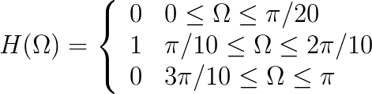

| (6.48) |  |
| (6.49) | gF[n] = F -1 {F { h[n] } • F { g[n] }} |
1Each of the signals and correlation functions contains far more samples than can be displayed across the screen of your device. The data are therefore “binned” to fit on the screen. Slight distortions—artefacts of the binning process—are therefore possible. ↵
| Choose display: |
| Zoom: |
|
| Play signal g(t) |
| Play signal gF (t) |
|
|